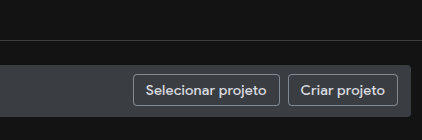

Prof. Me. Gustavo Ferreira Palma
Pauta
- GPS e Métodos de Geolocalização
- Autorizando Dados Sensíveis no Android
- Integrando o Suporte a Mapas a uma Aplicação Android
- Criando um Projeto no Painel do Google
- Gerando a Chave de API
- Integrando bibliotecas ao projeto Android
- Exmeplo Prático
GPS e Métodos de Geolocalização
GPS e Métodos de Geolocalização
- O Sistema de Posicionamento Glbal, GPS, é um dos primeiros sistemas de localização via satélite do mundo e
um dos primeiros sistemas a ser disponibilizado aos civis
- Vale lembrar que esse é uma inciativia dos Estados Unidos, e que não é única no mundo.
- A União Européia tem o Galileo
- A Rússia tem o GLONASS
- A China Possui o BeiDou
- Em uma escala menor temos o QZSS no Japão
- E também temos o NavIC na Índia
- Atualmente é comum encontrar no mercado dispositivos que atuem com fusão de sistemas de Geolocalização,
não dependendo apenas de um sistema, e utilizando as combinações para uma maior precisão
- >Os dispositivos capazes de utilizar múltiplos sistemas de navegação por satélite são conhecidos como
receptores GNSS (Global Navigation Satellite System)
GPS e Métodos de Geolocalização
- Assim como uma andorinha só não faz verão, um único satélite não é suficiente para determinar a posição de
um receptor na superfície da Terra.
- Para que o sistema de posicionamento funcione, é necessário que exista uma constelação de
satélites, distribuídos em órbitas conhecidas.
- Os satélites do GPS encontram-se em órbitas médias (MEO), continuamente monitoradas e conhecidas com
grande precisão.
- Ao receber simultaneamente os sinais de vários satélites, o receptor calcula sua distância em relação a
cada um deles.
- Utilizando essas distâncias e as posições conhecidas dos satélites, o receptor determina sua posição por
meio de um processo denominado trilateração.
GPS e Métodos de Geolocalização
Autorizando Dados Sensíveis no Android
Autorizando Dados Sensíveis no Android
- Desde a Versão 6.0 (Marshmallow) do Android, as permissões de tempo de execução (Runtime Permissions),
para qualquer periférico ou recurso que lide com dados sensíveis do usuário, como localização, fotos e até
mesmo Dados de contatos;
-
Agora além de declarar os usos no Arquivo de Manifesto, é necessário solicitar ao usuário a permissão para
uso dos recursos, o conscentimento deve ser explicito. não sendo apenas informado que o aplicativo fará uso
de determinado recurso
Autorizando Dados Sensíveis no Android
...
Autorizando Dados Sensíveis no Android
Integrando o Suporte a Mapas a uma Aplicação Android
Integrando o Suporte a Mapas a uma Aplicação Android
- Para integrar o suporte ao Google Maps a nossa aplicação alguns passos tem que ser seguidos:
- Criar um projeto no Painel do Google;
- Gerar uma Chave de API
- Integrar as bibliotecas do maps
Criar um projeto no Painel do Google
- Para criar um projeto no Painel do Google acesse este link
- E então clique em "Criar Projeto"

- Após Criar o Projeto, vamos selecionar a API do Google maps e gerar uma chave para a aplicação
Criar um projeto no Painel do Google
- A chave de API criada deve ser colocada no Arquivo de manifesto do projeto na seção "Application"
....
...
Integrando bibliotecas ao projeto Android
Integrando bibliotecas ao projeto Android
- Além das chaves de API e permissões para que os mapas funcionem é necessário adicionar ao projeto todas as bibliotecas referentes a eles.
- O Android utiliza um sistema de dependências dinâmicas, através do gerenciador de dependências Gradle, dessa forma não precisamos incluir as bibliotecas propriamente ditas, mas apenas dizer qual biblioteca e qual versão
- Para isso precisamos edtar o arquvo "gradle.dependencies.kts", e adicionar as seguintes bibliotecas
android{
...
dependencies {
...
implementation("com.google.android.gms:play-services-maps:19.0.0")
implementation("com.google.maps.android:maps-compose:6.4.1")
...
}
}
OBRIGADO!
Podem me encontrar aqui:
- gustavo.palma@unisal.edu.br
- www.gustavopalma.com.br